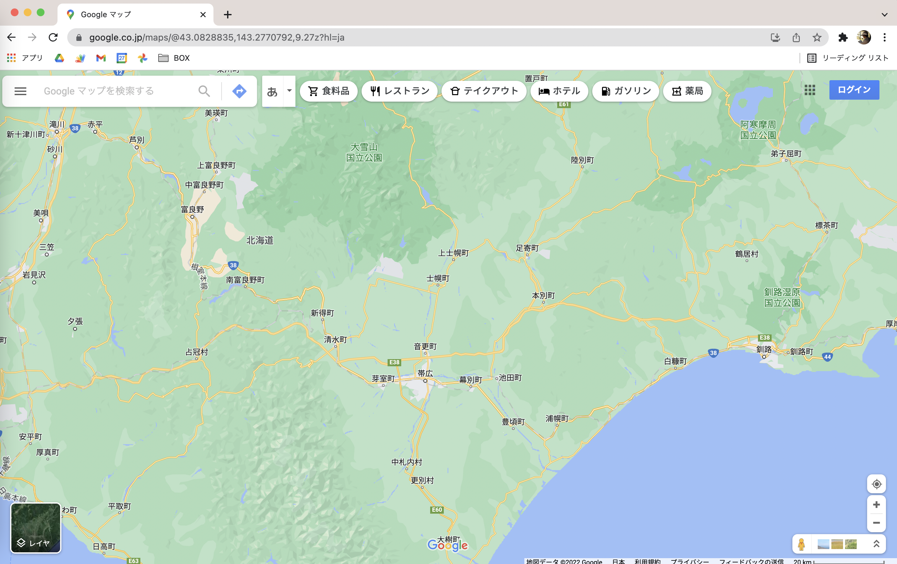
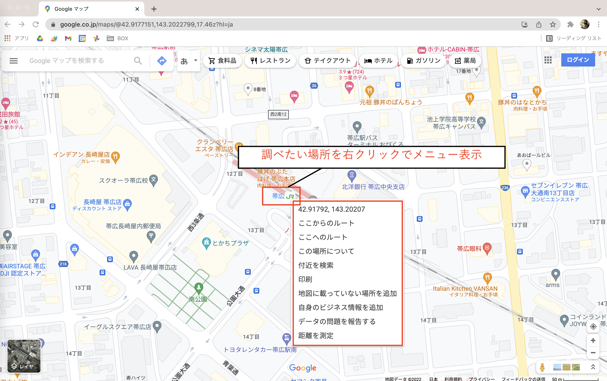
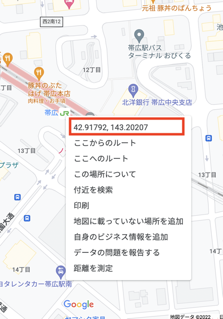
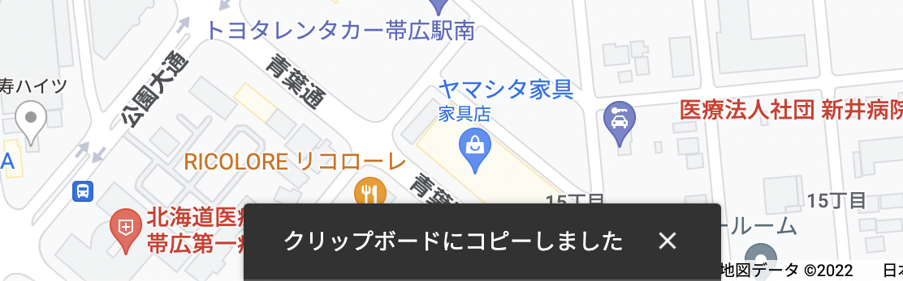
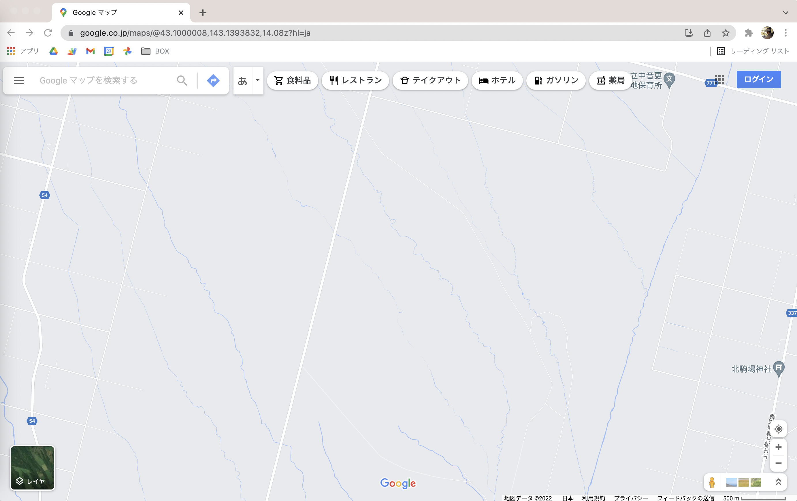
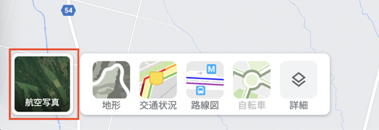

ある１地点の座標（緯度と経度）を取得する方法【Googleマップ】

執筆者

⬇︎ぜひ記事のシェアもお願いします！
本記事では、パソコン版のGoogleマップを使ってある１地点の座標（緯度と経度）を調べる方法を紹介します。
なかなか普段使う機会はないかもしれませんが、ノーコード開発ツール「Glide」で地図アプリを制作する場合に地点の座標をが必要になるので、その方法を簡単にまとめました。
パソコン版Googleマップで座標を取得する
まずは、パソコンのWebブラウザで Googleマップ を開きましょう。
このようにマップが表示されます。

次に、座標を調べたい部分を拡大して、その地点を右クリックします。
ここでは「帯広駅」の座標を調べてみたいと思います。
駅の場所を探して右クリックすると、このようにメニューが表示されますね。

メニューの一番上に、座標が表示されています。
帯広駅の座標は「北緯42.91792、東経143.20207」らしいです。

そのメニューの中の座標を クリック すれば、クリップボードにコピーすることができます。
そのままスプレッドシートなどにペーストすればOKです。
とてもカンタンですね！

マップの表示を衛星画像に切り替える
もし、畑の場所を調べたいときは、この白い地図の画面だと全く場所を特定することができません。

そういう時は、マップの表示方法を 「衛星画像」 に切り替えましょう。
左下の「レイヤ」と書かれている四角の部分 にカーソルを合わせると、色々な表示方法のメニューがでてきます。

そのまま同じ場所をクリックすると、画面の表示を航空写真に切り替えることができます。

これなら、畑の位置を特定することができそうですね。
まとめ
今回は、パソコン版のGoogleマップを使って、地点の座標（緯度と経度）を調べる方法をまとめてきました。
今回はGlideでマップを表示するために座標が必要になりましたが、他にも何か地図の座標とからめたアプリを作る際に、役に立つかもしれませんね。
⬇︎ぜひ記事のシェアもお願いします！